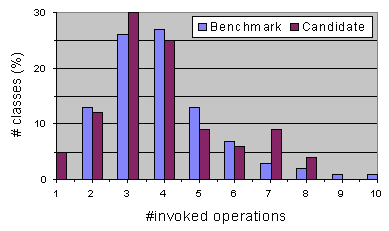

| Prev - Next - Down | SDMetrics - the UML design measurement tool |

Figure 31: Benchmarking
As an example, Figure 31 shows a (fictitious) distribution of the number of operations invoked from within a class. The vertical axis indicates, for each value on the horizontal axis (number of invoked operations), the percentage of classes that have that particular value. In the example, the distribution of the new classes follows closely the distribution of the benchmark, except for values 7 and 8, which occur more frequently. Such deviations from expected distributions pinpoint potential risk areas. These areas could then be inspected to verify whether such a deviation is justified, or if a redesign of that part should be considered.
The example also illustrates why the examination of distributions provides more information than simply defining thresholds for each metric that are not to be exceeded. In the example, the number of invoked operations is not exceedingly high for the candidate design - the benchmark suggests 10 as an upper value. A simple threshold test would have missed the potential design problem for the cluster of classes with 7 and 8 operation calls.
| Prev | Up | Next |
| Section 6.3.3 "Rankings" | Contents | Section 6.3.5 "Prediction Models" |